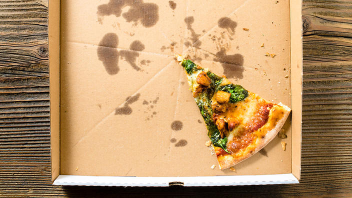

March 14, 2020
Don’t Practice Wishful Recycling

It is great that we’ve taken recycling to heart, but don’t let your aversion to throwing things in the trash tempt you into wishful recycling. According to our local landfill employees, pizza boxes are the #1 wishful recycling item. When you put questionable recyclables into the recycling bin you are actually doing more harm than good.
Instead, let’s take a look at the top 4 items on our recycling center employees’ wish lists:
#1. Pizza boxes are NOT recyclable.
We get hundreds of pizza boxes mixed into recycling that have to be sorted out. Pizza boxes always have food waste and oil…they are NOT CLEAN CARDBOARD and not recyclable.
#2. Rinsing out your recycling is very important. If food is caked in it your recycling we have to sort it out and throw it away. During the summer months, un-rinsed bottles and food waste attract bees and become a health risk for our employees. Just a quick rinse will do!
#3 Please don’t throw bags in to recycling… Bags must be opened and dumped by our employees. We recommend you practice your free throw or dump your bag and reuse it.
#4. Don’t be confused about what is mixed paper and what is cardboard. Corrugated cardboard and mixed paper & pressed paper board go to separate processing facilities so it is important to sort them correctly. If you can’t tell if a shoe box is pressed board or corrugated for instance, ask the staff they are pros!